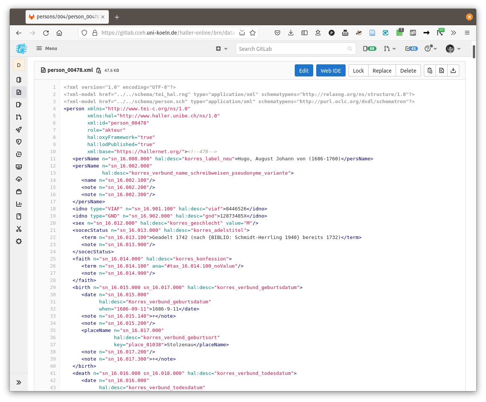

name: Titelseite class: ## *hallerNet* — Technische Umsetzung <img style="position: absolute; bottom:180px; left: 0px; opacity: 1; z-index: 0; width: 100%;" src="images/haller.jpg"/> <div style="position: absolute; top: 520px; left: 100px;"><p>Ringvorlesung <em>Einblicke in die Digital Humanities</em></p></div> <div style="position: absolute; top: 520px; right: 200px; text-align: right;"><p>Bern, 15. November 2021</p></div> --- ## Woher stammen die Daten? ### Faust Professional <div id="seadragon-viewer-faust" style="width:100%; height:600px;"></div> <div style="position: absolute; top: 550px; width: 90%; opacity: 0.2;"><p><a href="https://images.hallernet.org/iiif/misc/halleronline/persons_excel.tif/full/pct:10/0/default.jpg" target="_blank">https://images.hallernet.org/iiif/misc/halleronline/persons_excel.tif/full/pct:10/0/default.jpg</a></p></div> --- ## <del>Export</del> Report → Excel <div id="seadragon-viewer-excel" style="width:100%; height:600px;"></div> <div style="position: absolute; top: 550px; width: 90%; opacity: 0.2;"><p><a href="https://images.hallernet.org/iiif/misc/halleronline/persons_faust.tif/full/pct:10/0/default.jpg" target="_blank">https://images.hallernet.org/iiif/misc/halleronline/persons_faust.tif/full/pct:10/0/default.jpg</a></p></div> --- ## Datentransformation (XProc, XSLT) — Versionskontrolle — Archivierung <img src="images/xml-tei-gitlab-3.png" class="jump" style="position: absolute; top: 108px; color: white; left: 368px; width: 800px; /*box-shadow: 1px 1px 5px #888888;*/ -webkit-transform: rotate(-15deg); -moz-transform: rotate(-15deg); -ms-transform: rotate(-15deg); -o-transform: rotate(-15deg); transform: rotate(-15deg);" title=""/>  --- name: architecture background-size: contain ## Architektur / Werkzeuge <ul class="flex-container" style="position:absolute;top:150px;left: 80px;"> <li class="flex-item"> <h5>Backend</h5> <ul> <li>XML-Pipeline, basierend auf <a href="https://github.com/Armatiek/xslweb" target="_blank">XSLWeb</a></li> <li>Output-Formate <ul> <li>HTML (Zwischen-/Kontrollformat)</li> <li>Solr-XML</li> <li>CMIF (CorrespSearch)</li> <li>JSON</li> </ul> </li> </ul> </li> <li class="flex-item"> <h5>Frontend</h5> <ul> <li>JS-Framework</li> <ul> <li><a target="_blank" href="https://vuejs.org/">VueJS</a></li> <li><a target="_blank" href="https://quasar.dev/">Quasar Framework</a></li> </ul> </ul> </li> <li class="flex-item"> <h5>Suchindex</h5> <ul> <li>Apache Solr</li> </ul> </li> <li class="flex-item"> <h5>Projektdaten</h5> <ul> <li>Dateisystem / Volume auf Server</li> <li>Bearbeitung über WebDAV</li> <li>Versionskontrolle mit Git</li> <li>Organisation in Gitlab</li> </ul> </li> <li class="flex-item"> <h5>oXygen-Framework</h5> <ul> <li>Java, JavaScript</li> </ul> </li> <li class="flex-item"> <h5>Image-Server</h5> <ul> <li>Gegenwärtig in Transition<br/> (IIPImage auf Projekt-NAS → UB Bern)</li> </ul> </li> </ul> --- ## Zentrale Aspekte <h3> <ul> <li>Modularisierung<br/></li> <li>Daten als <em>first class citizens</em></li> </ul> </h3> <!-- name: Diskussion layout: false #Vielen Dank für die Aufmerksamkeit -->